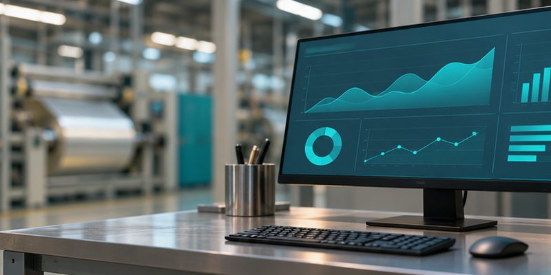

실시간 생산 모니터링
대시보드에서 생산 현황과 설비 상태, 품질 지표를 함께 확인합니다.

대시보드에서 생산 현황과 설비 상태, 품질 지표를 함께 확인합니다.
예상 수요에 맞춰 생산 일정을 세우고 작업에 필요한 자원을 배치합니다.
작업 현장에서 태블릿이나 스마트폰으로 생산 진행 상황을 확인합니다.
IoT 센서와 PLC에서 수집한 데이터를 바탕으로 설비의 가동 상태와 변화를 파악합니다.
검사 결과를 기록하고 불량이 발생한 제품의 품질 이력을 추적합니다.
현장 작업자가 자주 쓰는 기능을 찾고 생산 정보를 읽기 쉽게 화면을 구성합니다.
현장에서 사용할 기기와 연동할 설비·시스템을 알려주세요.